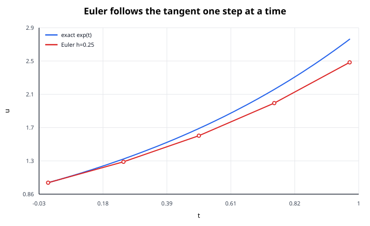
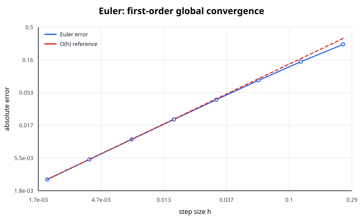

Euler's method is the simplest explicit time-stepping method for an initial value problem (IVP). It is useful both as a practical first approximation and as a way to understand how numerical ODE solvers work.
Consider
$$ u'(t) = f(t,u), \qquad u(t_0) = u_0. $$
The differential equation gives the slope of the solution curve. Euler's method assumes that this slope remains constant over one short step of length $h$.

If $t_n=t_0+nh$ and $u_n$ approximates $u(t_n)$, then
$$ u_{n+1} = u_n + h f(t_n,u_n). $$
This is called forward Euler or explicit Euler because the new value $u_{n+1}$ is computed directly from known quantities at step $n$.
Geometrically:
Expand the exact solution about $t_n$:
$$ u(t_n + h) = u(t_n) + h u'(t_n) + \frac{h^2}{2}u''(\xi_n), $$
for some $\xi_n\in(t_n,t_n+h)$. Since $u'(t_n)=f(t_n,u(t_n))$,
$$ u(t_n + h) = u(t_n) + h f(t_n,u(t_n)) + O(h^2). $$
Dropping the $O(h^2)$ term gives Euler's update.
This immediately explains the method's error:
So halving the step size should roughly halve the total error once the asymptotic regime is reached.

Solve approximately
$$ u' = u, \qquad u(0) = 1 $$
up to $t=0.1$ using $h=0.05$.
The exact solution is $u(t)=e^t$.
First step:
$$ u_1 = u_0 + h u_0 = 1 + 0.05(1) = 1.05. $$
Second step:
$$ u_2 = u_1 + h u_1 = 1.05 + 0.05(1.05) = 1.1025. $$
Thus
$$ u(0.1)\approx 1.1025. $$
The exact value is
$$ e^{0.1}\approx 1.105170. $$
The error is about $2.67\times 10^{-3}$.
For a scalar ODE:
t = t0
u = u0
while t < tf:
u = u + h*f(t, u)
t = t + hFor a system
$$ \mathbf{u}' = \mathbf{f}(t,\mathbf{u}), $$
the same formula applies componentwise:
$$ \mathbf{u}_{n+1} = \mathbf{u}_n + h\mathbf{f}(t_n,\mathbf{u}_n). $$
Accuracy is not the only reason to choose $h$ carefully. A step can be small enough to look reasonable but still be unstable.
For the test equation
$$ u' = \lambda u, $$
Euler gives
$$ u_{n+1} = (1 + h\lambda)u_n. $$
If $\lambda<0$, the exact solution decays. The numerical solution decays only if
$$ |1 + h\lambda|<1. $$
For real negative $\lambda$, this requires
$$ 0<h< \frac{2}{|\lambda|}. $$
This restriction is severe for stiff problems, where some modes decay much faster than others. Explicit Euler may then require extremely small steps even when the solution itself changes slowly.
Euler's method is valuable when:
It is usually not the best production method when high accuracy or stiffness matters.